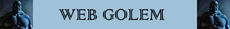

Scagliare Ragnatela;
Robustezza Superiore (+10 punti ferita);
Resistenza Superiore alla Botta;
Immunità alle armi normali / 5 danni a colpo;
Poteri dei Costruiti;
Vulnerabilità Superiore al Fuoco;
Vulnerabilità Minore al Taglio;

|
|
Ambiente/Habitat | Qualsiasi |
| Frequenza | Molto Rara | |
| Organizzazione | Solitario | |
| Periodo di Attività | Qualsiasi | |
| Dieta | Nessuna | |
| Intelligenza | Non Intelligent (0) | |
| Punti Combattimento | Nessuno | |
| Tesoro | Nessuno | |
| Allineamento Dominante | Neutrale | |
| Numero di Apparizione | 1d12: (1-7) 1 (8-11) 2 (12) 3 | |
| Classe Armatura | 4 [10 base, 6 corazza] | |
| Movimento | 5 esagoni | |
| Dadi Vita | 10 (100 punti ferita) | |
| Thac0 | Thac0 11 | |
| Numero di Attacchi | Pugno / Pugno / Morso | |
| Danni | 1d8+2 (botta) / 1d8+2 (botta) / 1d6+2 (taglio) | |
| Poteri Offensivi |
Veleno; Scagliare Ragnatela; |
|
| Poteri Difensivi |
[7] Punti Ferita per Dado
Vita; Robustezza Superiore (+10 punti ferita); Resistenza Superiore alla Botta; Immunità alle armi normali / 5 danni a colpo; |
|
| Poteri Generici |
Passa Ragnatela; Poteri dei Costruiti; |
|
| Vulnerabilità |
Lentezza nei Movimenti Minore; Vulnerabilità Superiore al Fuoco; Vulnerabilità Minore al Taglio; |
|
| Resistenza alla Magia | 25% | |
| Sensi | Vista Comune, Senso Primordiale 30 m. | |
| Dimensioni | Large (2.4 m. di altezza) | |
| Morale | Fearless (20) | |
| Valore in Punti Esperienza | 5262 |
|
TIRI SALVEZZA DELLA CREATURA |
|||||||
| CORAGGIO | ENERGIA VITALE | MAGIA | MALATTIA | MENTE | RIFLESSI | ROBUSTEZZA | VELENO |
| Immune | 0 | 0 | Immune | Immune | -5% | +5% | Immune |
| 39 | 44 | 54 | 37 | 52 | 51 | 36 | 34 |
Descrizione
Una creatura dalla forma vagamente umanoide alta circa 2,4 metri interamente composta da ragnatele compattate. Sulla faccia presenta otto occhi giallastri e sfaccettati simili a quelli di un ragno ed una bocca dalla quale si protendono alcuni denti acuminati ed affilati. Il peso di questa creatura si aggira intorno ai 250 kg. Questa creatura non emana alcun odore percepibile.
Combat
Il Golem di Ragnatela cerca di immobilizzare i propri nemici scagliando sfere di appiccicose ragnatele per poi raggiungerli mentre sono imprigionati ed attaccarli con la superiore forza fisica di cui la creatura dispone.
VELENO
(Superior Special
Ability)
[MORSO]: Quando
questa creatura colpisce
con il proprio morso una creatura diffonde nel corpo della vittima una
pericolosa tossina:
Tossina della Ragnatela
(Veleno Insinuativo) Onset
1 round,
Effetti
0/15,
Delay
3 round,
Tiro Salvezza
- 5%,
Assuefazione
none.
SCAGLIARE RAGNATELA
(Superior Special
Ability) : La creatura
può, con un'azione complessa avente
fattore iniziativa pari a +3,
scagliare una palla di densa ed appiccicosa ragnatela su un qualsiasi avversario
si trovi entro 15 metri di
distanza. La vittima può
provare ad evitare la ragnatela superando un tiro salvezza su riflessi. Se il
tiro salvezza fallisce la vittima sarà stata invischiata nella ragnatela
all'interno della sua posizione. La
creatura, dunque, non potrà spostarsi dalla zona occupata e si considererà
incapacitata ai fini dell'applicazione delle altre penalità ottenute nel
combattimento. Per liberarsi dalla ragnatela prima della fine della
durata dell'incantesimo la vittima potrà unicamente provare a liberarsi
con la forza. Tale azione che richiede un intero round e comporta
l'accumulo di un punto fatica provocherà alla ragnatela danni pari al
valore numerico per il quale la creatura è riuscita in una prova di
forza (con un tiro pari o superiore alla propria forza, quindi, non
provocherà alcun danno alla ragnatela). Le creature di taglia large
riceveranno un bonus di +2 alla prova di forza. La ragnatela può subire
fino a 20 punti danno prima di essere lacerata. I danni sono effettuati
alla fine del round per cui la creatura sarà libera di agire solo nel
round successivo alla distruzione della ragnatela. Terze creature
possono, se munite di armi da taglio, aiutare a rompere la ragnatela.
Costoro dovranno effettuare per ogni attacco una prova di destrezza (con
–1 di penalità se usano armi medium e -3 se usano armi large). Se la
prova è effettuata con successo l’attacco (senza necessità di alcun tiro
per colpire) danneggerà solo la ragnatela provocandole normali danni, se
invece la prova fallisce la ragnatela e la creatura bloccata si
divideranno i danni provocati con l'attacco (la ragnatela subirà danni
per eccesso). In ogni caso la ragnatela svanirà in polvere una volta
trascorsi 5 round dalla sua creazione e non potrà bloccare creature diverse da
quella sulla quale è stata scagliata. Le creature di taglia huge
o gargantuan
non sono bloccate da questa ragnatela. Una volta utilizzata questa
abilità speciale
la creatura non può utilizzarla
nuovamente nei due round di combattimento immediatamente successivi.
[7] PUNTI FERITA
PER DADO VITA
(Moderate Special
Ability):
Questa creatura, invece che utilizzare il comune dado da otto, possiede un
ammontare fisso di punti ferita che è pari a 7 punti ferita per ogni dado vita.
ROBUSTEZZA
SUPERIORE
(Typical Ability):
Il fisico di questa creatura è estremamente robusto conferendole una
robustezza superiore
che le garantisce
10
punti ferita supplementari.
RESISTENZA SUPERIORE ALLA BOTTA (Typical Ability): Il corpo della creatura è particolarmente resistente ai danni da botta, per tale motivo la stessa subirà solo la metà (per difetto) di tutti i danni da botta provocati nei suoi confronti.
IMMUNITA' ALLE ARMI NORMALI / 5 DANNI A COLPO (Typical Ability): Il corpo della creatura possiede una particolare resistenza ai danni comuni. La creatura, infatti, riduce i primi 5 danni subiti da ogni singolo colpo inferto. I danni provocati dalla magia o dalle armi magiche che siano almeno +1 nonché dagli attacchi fisici ad esse equivalenti non sono in alcun modo ridotti.
PASSA RAGNATELA (Lesser Special Ability): La creatura è in grado di camminare e spostarsi in posizioni occupate da ragnatele senza subire alcuna penalità di movimento e senza rischiare di restare invischiata nelle stesse. In pratica si sposterà tra le ragnatele come se le stesse non esistessero. Le ragnatele non sono disturbate od in altro modo alterate dal passaggio della creatura. Parimenti, la creatura non subirà alcuna penalità per essere stata colpita da ragnatele attraverso l'uso di poteri speciali, abilità particolari od incantesimi.
POTERI DEI
COSTRUITI: In quanto creature
costruite queste creature ottengono le seguenti caratteristiche dei costruiti (link).
LENTEZZA NEI
MOVIMENTI MINORE (Lesser Special
Vulnerability):
Questa creatura effettua le proprie azioni più lentamente del
normale. Costei quindi riceve un
malus alle proprie iniziative pari a + 2
che sarà applicato, una sola volta per round di combattimento, direttamente al
risultato ottenuto dal dado lanciato per l'iniziativa prima dell'applicazione di
ogni altro modificatore.
VULNERABILITA' SUPERIORE AL FUOCO (Typical Weakness): Il corpo della creatura è particolarmente sensibile ai danni da fuoco, per tale motivo la creatura subirà il 150% di tutti i danni da fuoco (calcolato per eccesso) sia di natura magica che naturale provocati nei suoi confronti. Inoltre la creatura subirà una penalità di -5% a tutti i tiri salvezza siano provocati da effetti basati sul fuoco.
VULNERABILITA' MINORE AL TAGLIO
(Typical Weakness):
Il corpo della creatura è particolarmente sensibile ai danni da punta, per tale
motivo la stessa subirà il 125%
(per eccesso) di tutti i danni da taglio provocati nei suoi confronti.
Habitat/Society
Un Golem di Ragnatela è un costruito di media potenza composto interamente da fitti strati di ragnatele. La sua tecnica di costruzione e di incantamento si ricollega direttamente alla tradizione degli Elfi Scuri.
Ecology
I Golem di
Ragnatela sono costruiti animati esclusivamente attraverso rituali magici legati
alla tradizione degli Elfi Scuri. Il processo per la creazione di ogni singolo
Golem di Ragnatela è lungo
e costoso. In particolare, il mago deve prima ottenere (o redigere) il
libro magico di creazione dei Golem di
Ragnatela. Si tratta di un vero e
proprio oggetto magico scritto in un volume di carta o due di pergamena dal
valore di 1000 punti esperienza
e 10000 monete d'oro
(Enchantment).
Il libro è, infatti, uno strumento necessario nel corso della creazione del
costruito che si consuma al termine del procedimento di creazione. Il processo
di creazione richiede che il mago lavori in un laboratorio utilizzato per la
creazione degli oggetti magici (non essendo sufficiente quello relativo alla
creazione di oggetti magici minori). Il mago deve utilizzare un ammontare di
componenti materiali e magici vari pari a
5000
monete d'oro ed impiegare
personalmente 90 giorni di lavoro (che non è richiesto effettui consecutivamente). Al
termine del periodo di lavoro il mago avrà una percentuale di riuscita calcolata
in base ai seguenti parametri:
Percentuale base: Triplo del
punteggio di intelligenza
posseduto.
+1%
per livello di esperienza superiore all'11°
livello
-10%
per livello di esperienza inferiore all'11°
livello
nessuna modifica
se il mago appartiene alla razza degli
Elfi Scuri
-10%
se il mago appartiene a qualsiasi altra razza
+3%
se il mago utilizza una
Common Mystical Resource
della scuola Enchantment (una sola risorsa
mistica può essere utilizzata nel processo).
+6%
se il mago utilizza una
Uncommon Mystical Resource
della scuola Enchantment
(una sola risorsa mistica può essere utilizzata
nel processo).
+10%
se il mago utilizza una
Rare Mystical Resource
della scuola Enchantment
(una sola risorsa mistica può essere utilizzata
nel processo).
+15%
se il mago utilizza una
Exotic Mystical Resource
della scuola Enchantment
(una sola risorsa mistica può essere utilizzata
nel processo).
+5%
se il mago impiega 30 giorni di lavoro
supplementari.
+5%
se il mago impiega 1000 monete d'oro di
componenti supplementari.
+ 10%/
+ 5%/
- 4%/
- 8% prova
nella competenza Weaving (successo
critico/successo/fallimento/fallimento
critico).
+ 8%/
+ 4%/
- 3%/
- 6% prova
nella competenza Construction Lore (successo
critico/successo/fallimento/fallimento
critico).
+ 6%/
+ 3%/
- 2%/
- 4% prova
nella competenza Arcanology (successo
critico/successo/fallimento/fallimento
critico).
Al termine della fase di lavoro il mago potrà effettuare la prova tirando il
dado percentuale.
Se la prova riesce
il mago avrà creato l'automa che resterà ai suoi comandi, consumando il libro
magico di creazione.
Se la prova riesce con successo
critico (01-05 % naturale) non sarà
consumato il libro magico di creazione.
Se la prova fallisce
l'automa non sarà stato creato e il mago
avrà sprecato il tempo di lavoro ed i componenti magici materiali (ma non il
libro magico di creazione).
Se la prova fallisce con fallimento
critico (96-100 % naturale) il mago
avrà anche distrutto il libro magico di creazione.
Mystical Resource Sourge
(Cuore di Ragnatela) Quantità: 1, Presenza 50% - Scuola di Magia:
Enchantment
- Qualità della Risorsa:
Common.
Mystical Resource Sourge
(Ghiandola Venefica) Quantità: 1, Presenza 30% - Effetto Particolare:
Veleno
- Qualità della Risorsa:
Common.